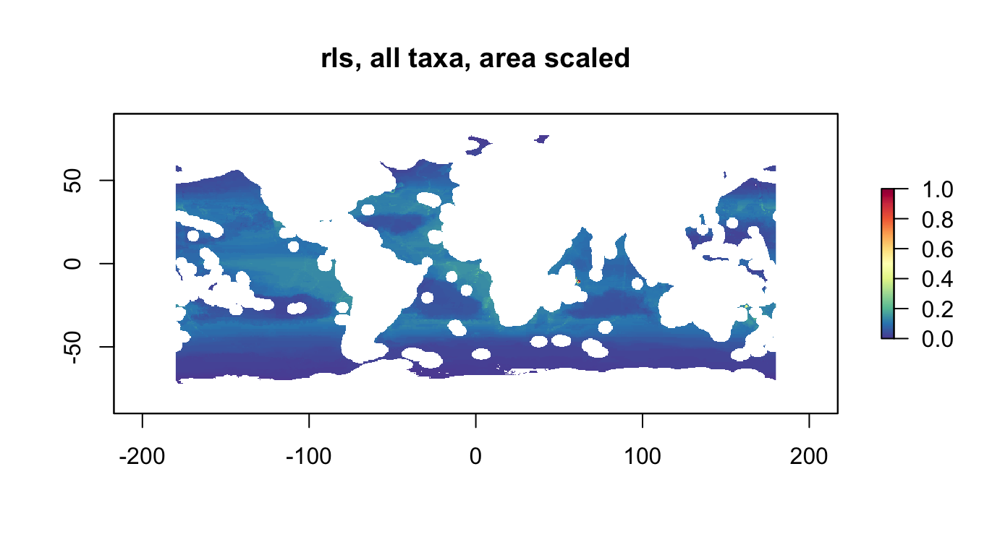
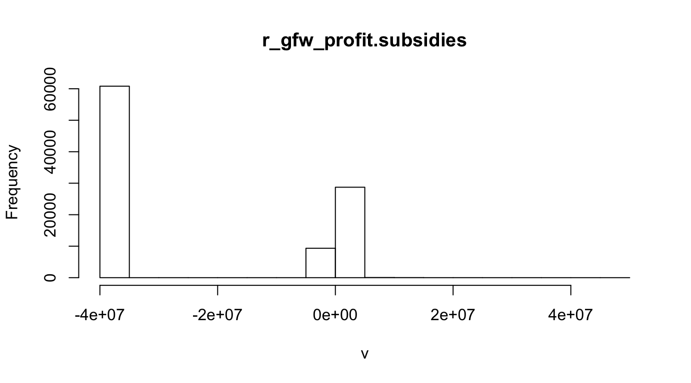
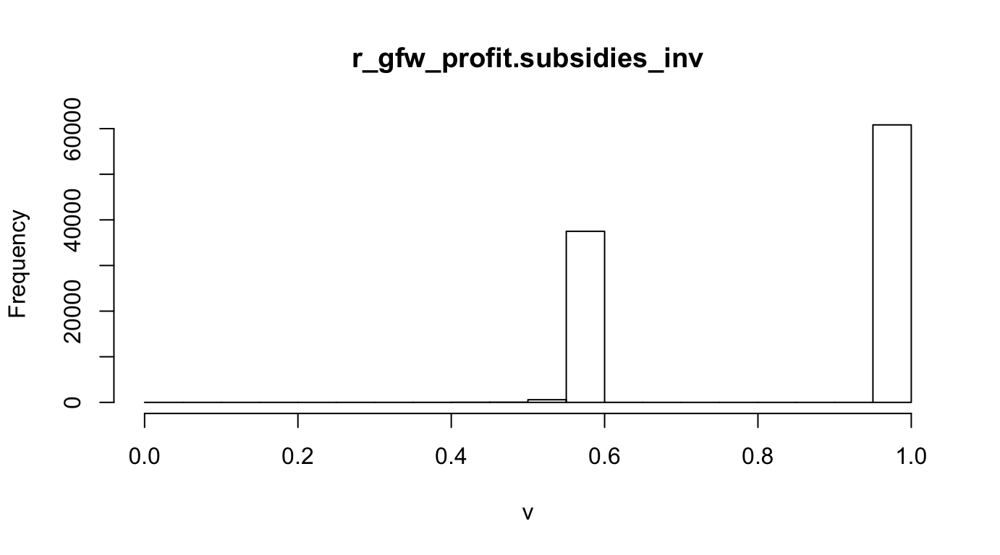
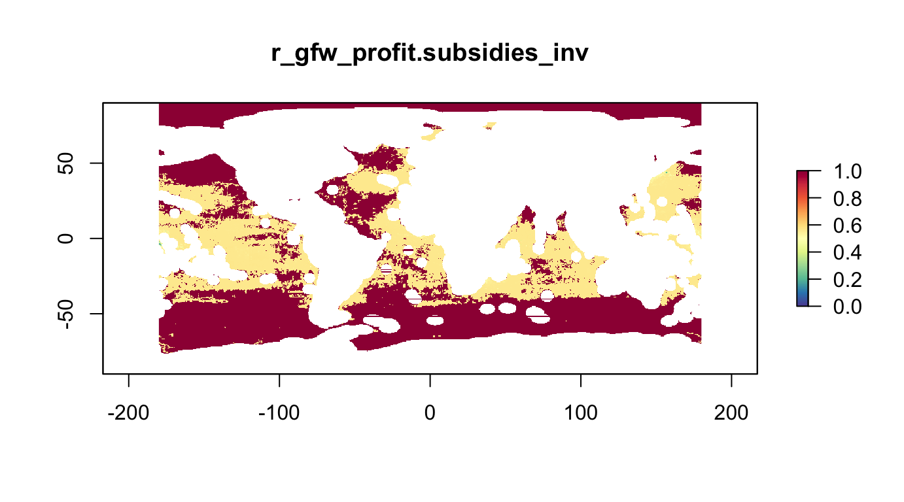
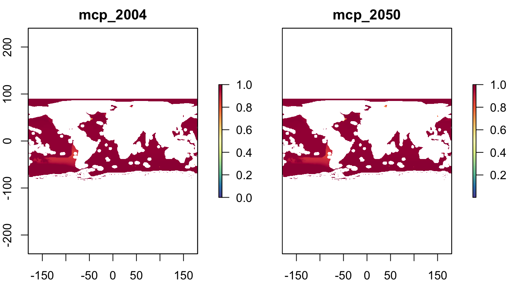
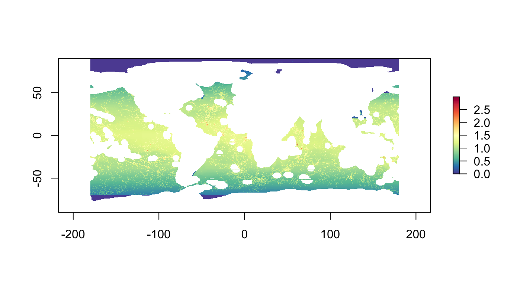
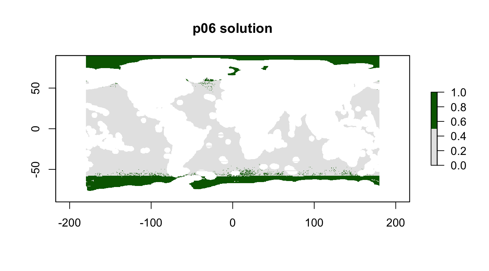

Explore prioritizr
Ben Best
2019-03-12
Source:vignettes/prioritizr_explore.Rmd
prioritizr_explore.RmdSetup
suppressPackageStartupMessages({
library(tidyverse)
library(here)
library(glue)
library(raster)
select = dplyr::select
library(sf)
library(leaflet)
library(RColorBrewer)
library(rasterVis)
library(prioritizr) # install.packages("prioritizr")
#library(bbnj)
# devtools::install_local(here::here(), force=T)
devtools::load_all()
})
if (basename(getwd())!="vignettes") setwd(here("vignettes"))
# set rainbow color palette
pal <- colorRampPalette(brewer.pal(11, "Spectral"))
cols <- rev(pal(255))BBNJ data sets
The core datasets for developing BBNJ scenarios have been made available within the R package using the data-raw/create_data.R script, which also clips input datasets to the high seas, for lazy loading within R. For programs external to R, usable formats (*.tif, *.shp) have been placed into the data-raw/ folder online, which you can access by downloading the latest bbnj master.zip.
# view list of all datasets in bbnj R package
#data(package="bbnj")
# get detailed help on any dataset
# ?r_pu_id
# use lazily loaded dataset, not showing in environment
r_pu_id## class : RasterLayer
## dimensions : 360, 720, 259200 (nrow, ncol, ncell)
## resolution : 0.5, 0.5 (x, y)
## extent : -180, 180, -90, 90 (xmin, xmax, ymin, ymax)
## coord. ref. : +proj=longlat +datum=WGS84 +no_defs +ellps=WGS84 +towgs84=0,0,0
## data source : /Users/bbest/Gdrive Ecoquants/projects/bbnj/data/derived/boundary/high_seas_cellid_0.5dd.tif
## names : high_seas_cellid_0.5dd
## values : 1, 251323 (min, max)# explicitly attach to environment
data("r_pu_id")Planning Units
Using half-degree global raster (resolution of AquaMaps, GFW, …).
# show planning unit id raster
plot(r_pu_id, col = cols, main="pu_id")
PU Cost as Area
Get area for planning units (\(km^2\)):
r_pu_area <- area(r_pu_id) %>% # in km2
mask(r_pu_id)
plot(r_pu_area, col = cols, main="pu_area (km2)")
Rescale area for being able to set planning unit budgets to percentages of the global high seas:
A <- cellStats(r_pu_area, "sum")
r_pu_areas <- r_pu_area / A
#cellStats(r_pu_areas, "sum") # 1
plot(r_pu_areas, col = cols, main="pu_areas (sums to 1)")
Conservation Targets
Biodiversity
All the species distribution data was generously provided as comma-seperated value (csv) files in a zip package aquamaps_ver0816c.zip by Kristin Kaschner and Cristina Garilao to Ben Best ben@ecoquants.com on Jun 21, 2018 from the extensive work available at http://AquaMaps.org to be fully cited (K. Kaschner et al. 2016) whenever used. For details on generating indicators, see Calculate Indicators • gmbi:
Note that a probability ≥ 0.5 was used to convert AquaMaps relative environmental suitability (RES) from continuous [0 - 1] to binary [0,1] (Klein et al. 2015; O’Hara et al. 2017) for generating these two indicators:
nspp: number of species, ie species richnessrls: Red List Sum (RLS)
The Red List Sum (RLS) is the numerator from the Red List Index (RLI) ((Butchart et al. 2007; Juslén et al. 2016):
\[RLS = \sum_{i=1}^{n_{spp}} w_i\]
We will use only the numerator, the Red List Sum (RLS), of the Red List Index (RLI) to quantify the “endangeredness” of a cell without dilution from being in a species-rich place as the RLI does when averaging the extinction risk for all assessed species. For more details see Calculate extinction risk - Calculate Indicators • gmbi.
These indicators were calculated for all species as well as taxonomic groups defined in Assign taxonomic groups - Calculate Indicators • gmbi.
With rasters from R package marinebon/gmbi, mask rasters to high seas planning units and save into this R package:
names(s_bio_gmbi)## [1] "nspp_all" "nspp_bivalves"
## [3] "nspp_chitons" "nspp_coastal.fishes"
## [5] "nspp_corals" "nspp_crustaceans"
## [7] "nspp_echinoderms" "nspp_euphausiids"
## [9] "nspp_gastropods" "nspp_hydrozoans"
## [11] "nspp_mangroves" "nspp_na"
## [13] "nspp_non.squid.cephalopods" "nspp_pinnipeds"
## [15] "nspp_reptiles" "nspp_sea.spiders"
## [17] "nspp_seagrasses" "nspp_sharks"
## [19] "nspp_sponges" "nspp_tunas.n.billfishes"
## [21] "nspp_tunicates" "nspp_worms"
## [23] "rls_all" "rls_bivalves"
## [25] "rls_coastal.fishes" "rls_corals"
## [27] "rls_crustaceans" "rls_echinoderms"
## [29] "rls_gastropods" "rls_na"
## [31] "rls_non.squid.cephalopods" "rls_pinnipeds"
## [33] "rls_reptiles" "rls_sharks"
## [35] "rls_tunas.n.billfishes"
nspp, all taxa, area scaled
r_nspp_all_as <- rescale_raster(r_nspp_all, multiply_area=T) # "bio_nspp"
plot(r_nspp_all_as, col = cols, main="nspp, all taxa, area scaled")
nspp, by taxonomic group
grps_nspp <- names(s_bio_gmbi) %>%
str_subset("^nspp_") %>%
str_subset("_all$", negate=T)
s_bio_nspp_grps <- raster::subset(s_bio_gmbi, grps_nspp)
names(s_bio_nspp_grps) <- names(s_bio_nspp_grps) %>%
str_replace("nspp_", "")
plot(s_bio_nspp_grps, col = cols)

rls, all taxa, area scaled
r_rls_all_as <- rescale_raster(r_rls_all, multiply_area=T)
plot(r_rls_all_as, col = cols, main="rls, all taxa, area scaled")
Physiographic: Seamounts
Count of seamounts (Kim & Wessel, 2011) in half-degree cells:
plot(r_phys_seamounts, col = cols, main="r_phys_seamounts")
Physiographic: Benthic Seascapes
Area (km2) of 1 thru 11 classes of benthic seascapes (Harris & Whiteway, 2009):
- Upper Bathyal, shallow shelf, low DO, very high PP. thick sediment very warm
- Lower Bathyal, deep shelf (submerged), marginal plateaus, very high DO, high PP, thick sediment, warm
- Lower Bathyal, other ridges and plateaus, marginal plateaus, marginal seas with hilly bottom, steep, very low DO
- Lower Bathyal, continental slope see high PP, very thick sediment, warm
- Lower Bathyal, island arcs, steep, high DO
- Lower Bathyal (Abyssal-Hadal), deep water trenches, island arcs, trenches controlled by fracture zones, volcanic ridges and plateaus, very steep
- Abyssal, volcanic ridges and highs, central rift zone, ridge flanks, microcontinents, cold
- Abyssal, flat sedimented plains of marginal seas, central rift zone, ridge flanks, marginal seas with hilly bottoms, flat, low DO, thin sediment
- Abyssal (Hadal), trenches controlled by fracture zones, deep water trenches, large arched uplifted structures, low PP thin sediment, cold
- Abyssal, plains with slightly undulating seafloor, flat abyssal plains, continental rise, very flat, high DO, low PP, very cold
- Abyssal, hilly plains, large (arched) uplifted structures, flat abyssal plains, flat, very low PP, very thin sediment
plot(s_phys_scapes, col = cols)
Fisheries: Global Fishing Watch
Raster stack from Global Fishing Watch analysis of high seas (Sala et al, 2018) for half-degree raster of high seas (year of analysis: 2016).
names(s_fish_gfw)## [1] "fishing_KWH"
## [2] "mean_costs"
## [3] "revenue"
## [4] "mean_scaled_profits"
## [5] "mean_scaled_profits_with_subsidies"
## [6] "scaled_profits_low_labor_cost"plot(s_fish_gfw, col = cols)
Gap-Filling Fisheries Layer
Assuming places fished have the least profit, gap fill with minimum value:
r_fish_gfw.profit <- raster(s_fish_gfw, "mean_scaled_profits") %>%
gap_fill_raster()
r_fish_gfw.profit.subsidies <- raster(s_fish_gfw, "mean_scaled_profits_with_subsidies") %>%
gap_fill_raster()
plot(r_fish_gfw.profit.subsidies, col=cols, main="r_gfw_profit.subsidies")Inverting Fisheries for Conservation Target
Fisheries could be included into the optimization in at least a couple ways:
Fisheries as Planning Unit Cost (Minimize). By minimizing the planning unit cost, conservation targets are maximized.
Fisheries as Conservation Target (Maximize Inverse). To reduce friction with fishing industry the maximum profit areas are to be minimized. To achieve this on the conservation target side of the optimization the inverse of the original profit layers is to be used, which can take the form:
\[v_{cell} = 1 - \frac{v_{cell}}{\max(v) - \min(v)}\]
r_fish_gfw.profit.subsidies_inv <- rescale_raster(r_fish_gfw.profit.subsidies, inverse=T) #, log=T)
hist(r_fish_gfw.profit.subsidies, main="r_gfw_profit.subsidies")
hist(r_fish_gfw.profit.subsidies_inv, main="r_gfw_profit.subsidies_inv")
plot(r_fish_gfw.profit.subsidies_inv, col=cols, main="r_gfw_profit.subsidies_inv")
Fisheries: U of British Columbia
Raster stack from UBC (Cheung, Lam et al; in draft) of maximum catch potential (MCP; landings in metric tons) of more than 1,000 fish and invertebrates species for (average 1995 to 2014) and (average 2041 to 2060 under ‘business as usual’ climate change scenario GFDL 8.5).
plot(s_fish_ubc, col = cols)Rescale and Invert
s_fish_ubc_inv <- rescale_stack(s_fish_ubc, inverse=T)
plot(s_fish_ubc_inv, col = cols)
Priorization Scenarios
p01: Biodiversity Centric, 10%, max utility
Maximize diversity of species and habitats, given a budget of 10% of the high seas.
p01_features <- stack(
r_nspp_all_as,
r_rls_all_as,
rescale_raster(r_phys_seamounts),
rescale_raster(r_phys_vents),
rescale_stack(s_phys_scapes))
names(p01_features) <- c(
"bio_nspp",
"bio_rls",
"phys_seamounts",
"phys_vents",
glue("phys_scape{1:11}"))
# hist(r_nspp_all_as); hist(r_rls_all_as); hist(rescale_raster(r_phys_seamounts))
p01_sum <- raster::stackApply(p01_features, rep(1,nlayers(p01_features)), sum) %>%
mask(r_pu_id)
plot(p01_sum, col=cols)
p01 <- problem(r_pu_areas, p01_features) %>%
add_max_utility_objective(budget = 0.1) %>% # 10% of total high seas area
add_gurobi_solver()
p01_sol <- solve_log(p01, redo=F)
plot(p01_sol, col = c("grey90", "darkgreen"), main = "p01 solution")
# area of solution
cellStats(r_pu_areas * p01_sol, "sum")## [1] 0.0999999# calculate how well features are represented in the solution
feature_representation(p01, p01_sol)## # A tibble: 15 x 3
## feature absolute_held relative_held
## <chr> <dbl> <dbl>
## 1 bio_nspp 667. 0.122
## 2 bio_rls 719. 0.122
## 3 phys_seamounts 2783. 0.740
## 4 phys_vents 31.7 0.703
## 5 phys_scape1 439. 0.0286
## 6 phys_scape2 1102. 0.0607
## 7 phys_scape3 912. 0.0744
## 8 phys_scape4 1969. 0.168
## 9 phys_scape5 1460. 0.188
## 10 phys_scape6 612. 0.292
## 11 phys_scape7 0.444 0.00145
## 12 phys_scape8 278. 0.259
## 13 phys_scape9 68.4 0.0763
## 14 phys_scape10 8.60 0.745
## 15 phys_scape11 705. 0.241Strategy:
- Solve for
add_max_utility_objective(budget = 0.1)to determine max relative targets for:
- all targets: min
- ea target: max
- Switch to
add_max_features_objective(budget = 0.1)+add_relative_targets(c(0.3, 0.3, 0)) -
add_feature_weights()to balance out
-
- add BLM
p01_diagnostics <- problem_diagnostics(r_pu_areas, p01_features, budget=0.1)
p01_diagnostics #View(p01_diagnostics)## # A tibble: 15 x 3
## feature rel_all rel_each
## <chr> <dbl> <dbl>
## 1 bio_nspp 0.122 0.181
## 2 bio_rls 0.122 0.183
## 3 phys_seamounts 0.740 0.783
## 4 phys_vents 0.703 1.
## 5 phys_scape1 0.0286 0.491
## 6 phys_scape2 0.0607 0.416
## 7 phys_scape3 0.0744 0.616
## 8 phys_scape4 0.168 0.629
## 9 phys_scape5 0.188 0.630
## 10 phys_scape6 0.292 1.000
## 11 phys_scape7 0.00145 1.000
## 12 phys_scape8 0.259 1.000
## 13 phys_scape9 0.0763 1.000
## 14 phys_scape10 0.745 1
## 15 phys_scape11 0.241 0.984p02: Biodiversity Centric, 10%, max features
If relative target exceeds amount available, ie p01_diagnostics$rel_each, then target gets essentially dropped, so set to some compromise between full solution (rel_all) and max amount if just that feature chosen (rel_each) as the mean of the two. Do not excessively weight other features, so cap to 0.2 or similar with min.
p02_targets <- p01_diagnostics %>%
mutate(
rel_mean = (rel_all + rel_each) / 2,
target = map_dbl(rel_mean, function(x) min(x, 0.2)))
p02_targets## # A tibble: 15 x 5
## feature rel_all rel_each rel_mean target
## <chr> <dbl> <dbl> <dbl> <dbl>
## 1 bio_nspp 0.122 0.181 0.151 0.151
## 2 bio_rls 0.122 0.183 0.153 0.153
## 3 phys_seamounts 0.740 0.783 0.762 0.2
## 4 phys_vents 0.703 1. 0.851 0.2
## 5 phys_scape1 0.0286 0.491 0.260 0.2
## 6 phys_scape2 0.0607 0.416 0.239 0.2
## 7 phys_scape3 0.0744 0.616 0.345 0.2
## 8 phys_scape4 0.168 0.629 0.399 0.2
## 9 phys_scape5 0.188 0.630 0.409 0.2
## 10 phys_scape6 0.292 1.000 0.646 0.2
## 11 phys_scape7 0.00145 1.000 0.501 0.2
## 12 phys_scape8 0.259 1.000 0.629 0.2
## 13 phys_scape9 0.0763 1.000 0.538 0.2
## 14 phys_scape10 0.745 1 0.872 0.2
## 15 phys_scape11 0.241 0.984 0.613 0.2p02 <- problem(r_pu_areas, p01_features) %>%
add_max_features_objective(budget = 0.1) %>%
add_relative_targets(pull(p02_targets, target)) %>%
add_gurobi_solver()
p02_sol <- solve_log(p02, redo=F)
# plot solution
plot(p02_sol, col = c("grey90", "darkgreen"), main = "p02 solution")# area of solution
cellStats(r_pu_areas * p02_sol, "sum")## [1] 0.09996667# calculate how well features are represented in the solution
feature_representation(p02, p02_sol)## # A tibble: 15 x 3
## feature absolute_held relative_held
## <chr> <dbl> <dbl>
## 1 bio_nspp 829. 0.151
## 2 bio_rls 899. 0.153
## 3 phys_seamounts 759. 0.202
## 4 phys_vents 9.71 0.215
## 5 phys_scape1 0 0
## 6 phys_scape2 0 0
## 7 phys_scape3 2194. 0.179
## 8 phys_scape4 2343. 0.200
## 9 phys_scape5 1554. 0.200
## 10 phys_scape6 419. 0.200
## 11 phys_scape7 61.8 0.202
## 12 phys_scape8 215. 0.200
## 13 phys_scape9 179. 0.200
## 14 phys_scape10 2.71 0.234
## 15 phys_scape11 585. 0.200p03: Biodiversity Centric, 10%, max features with weights
Maximize overall biodiversity, given a budget of 10% of all high seas area.
Try to include missed phys_scape1 and phys_scape2 by adding weight.
p03 <- problem(r_pu_areas, p01_features) %>%
add_max_features_objective(budget = 0.1) %>%
add_relative_targets(pull(p02_targets, target)) %>%
add_feature_weights(c(10, 10, 10, 10, 3, 3, 2, 2, rep(1, 7))) %>%
add_gurobi_solver()
p03_sol <- solve_log(p03, redo=F)
plot(p03_sol, col = c("grey90", "darkgreen"), main = "p03 solution")cellStats(r_pu_areas * p03_sol, "sum")## [1] 0.09999678feature_representation(p03, p03_sol)## # A tibble: 15 x 3
## feature absolute_held relative_held
## <chr> <dbl> <dbl>
## 1 bio_nspp 829. 0.151
## 2 bio_rls 899. 0.153
## 3 phys_seamounts 752. 0.200
## 4 phys_vents 9.43 0.209
## 5 phys_scape1 3076. 0.200
## 6 phys_scape2 661. 0.0364
## 7 phys_scape3 11.0 0.000897
## 8 phys_scape4 2343. 0.200
## 9 phys_scape5 1.11 0.000143
## 10 phys_scape6 419. 0.200
## 11 phys_scape7 61.3 0.200
## 12 phys_scape8 216. 0.201
## 13 phys_scape9 179. 0.200
## 14 phys_scape10 2.71 0.235
## 15 phys_scape11 584. 0.200problem_diagnostics(r_pu_areas, p01_features, budget=0.3, pfx="p05")## # A tibble: 15 x 3
## feature rel_all rel_each
## <chr> <dbl> <dbl>
## 1 bio_nspp 0.403 0.462
## 2 bio_rls 0.405 0.482
## 3 phys_seamounts 0.996 1.000
## 4 phys_vents 0.987 1.
## 5 phys_scape1 0.144 1.000
## 6 phys_scape2 0.261 0.995
## 7 phys_scape3 0.367 1.
## 8 phys_scape4 0.368 1.000
## 9 phys_scape5 0.425 0.997
## 10 phys_scape6 0.564 1.000
## 11 phys_scape7 0.167 1.000
## 12 phys_scape8 0.621 1.000
## 13 phys_scape9 0.285 1.000
## 14 phys_scape10 0.830 1
## 15 phys_scape11 0.493 1.p01_diagnostics <- problem_diagnostics(r_pu_areas, p01_features, budget=0.1)
p01_diagnostics #View(p01_diagnostics)## # A tibble: 15 x 3
## feature rel_all rel_each
## <chr> <dbl> <dbl>
## 1 bio_nspp 0.122 0.181
## 2 bio_rls 0.122 0.183
## 3 phys_seamounts 0.740 0.783
## 4 phys_vents 0.703 1.
## 5 phys_scape1 0.0286 0.491
## 6 phys_scape2 0.0607 0.416
## 7 phys_scape3 0.0744 0.616
## 8 phys_scape4 0.168 0.629
## 9 phys_scape5 0.188 0.630
## 10 phys_scape6 0.292 1.000
## 11 phys_scape7 0.00145 1.000
## 12 phys_scape8 0.259 1.000
## 13 phys_scape9 0.0763 1.000
## 14 phys_scape10 0.745 1
## 15 phys_scape11 0.241 0.984p04: Biodiversity Centric, 10%, max utility with BLM
Add clumping.
From the marxan manual 1.8.10.pdf (p. 22-23):
3.2.1.1.2 Boundary Length Modifier As a very rough guide, a good starting place for the BLM is to scale it such that the largest boundary between planning units becomes a similar order of magnitude to the most expensive planning unit. For instance, if your highest planning unit cost is 100 and your longest boundary is 1000, you may want to start the BLM at 0.1. Note that it is usually best to explore a range of values that are separated using a fixed multiplier; e.g., 0.04, 0.2, 1, 5, 25 – where in this example, these values are each multiplied by 5. Typically, the values are increased exponentially or by orders of magnitude in order to sample a range of values and choose one that balances the order of magnitude of competing terms of the objective function.
Using same formulation as p01 + BLM.
# set clumping parameter based on BLM advice in Marxan manual, exp't with p01
blm <- cellStats(r_pu_areas, "max") / 0.5 * 10000
blm## [1] 0.2647405p04 <- problem(r_pu_areas, p01_features) %>%
add_max_utility_objective(budget = 0.1) %>%
add_boundary_penalties(blm, 1) %>%
add_gurobi_solver()
p04_sol <- solve_log(p04, redo=F)
plot(p04_sol, col = c("grey90", "darkgreen"), main = "p04 solution")cellStats(r_pu_areas * p04_sol, "sum")## [1] 0.09999998feature_representation(p04, p04_sol)## # A tibble: 15 x 3
## feature absolute_held relative_held
## <chr> <dbl> <dbl>
## 1 bio_nspp 815. 0.149
## 2 bio_rls 869. 0.148
## 3 phys_seamounts 1386. 0.369
## 4 phys_vents 20.1 0.446
## 5 phys_scape1 205. 0.0133
## 6 phys_scape2 977. 0.0538
## 7 phys_scape3 565. 0.0460
## 8 phys_scape4 2675. 0.228
## 9 phys_scape5 1241. 0.160
## 10 phys_scape6 528. 0.252
## 11 phys_scape7 0 0
## 12 phys_scape8 333. 0.310
## 13 phys_scape9 126. 0.141
## 14 phys_scape10 11.6 1
## 15 phys_scape11 893. 0.306p05: Biodiversity Centric, 30%, max utility
Maximize diversity of species and habitats, given a budget of 30% of the high seas.
p05 <- problem(r_pu_areas, p01_features) %>%
add_max_utility_objective(budget = 0.3) %>%
add_gurobi_solver()
p05_sol <- solve_log(p05, redo=F)
plot(p05_sol, col = c("grey90", "darkgreen"), main = "p05 Solution")cellStats(r_pu_areas * p05_sol, "sum")## [1] 0.2999999feature_representation(p05, p05_sol)## # A tibble: 15 x 3
## feature absolute_held relative_held
## <chr> <dbl> <dbl>
## 1 bio_nspp 2209. 0.403
## 2 bio_rls 2385. 0.405
## 3 phys_seamounts 3742. 0.996
## 4 phys_vents 44.6 0.987
## 5 phys_scape1 2210. 0.144
## 6 phys_scape2 4734. 0.261
## 7 phys_scape3 4505. 0.367
## 8 phys_scape4 4308. 0.368
## 9 phys_scape5 3298. 0.425
## 10 phys_scape6 1183. 0.564
## 11 phys_scape7 51.3 0.167
## 12 phys_scape8 668. 0.621
## 13 phys_scape9 255. 0.285
## 14 phys_scape10 9.59 0.830
## 15 phys_scape11 1441. 0.493p06: Fisheries Centric, 10%, max utility
Goal: Protect habitats with strong focus on minimizing impacts to fishing profits.
- To have inverse fishing as a target
p06_features <- stack(
r_fish_gfw.profit.subsidies_inv,
raster(s_fish_ubc_inv, "mcp_2004"),
rescale_raster(r_phys_seamounts),
rescale_raster(r_phys_vents),
rescale_stack(s_phys_scapes))
names(p06_features) <- c(
"fish_profit.subs",
"fish_mcp.now",
"phys_seamounts",
"phys_vents",
glue("phys_scape{1:11}"))
# hist(r_nspp_all_as); hist(r_rls_all_as); hist(rescale_raster(r_phys_seamounts))
p06_sum <- raster::stackApply(p06_features, rep(1,nlayers(p06_features)), sum) %>%
mask(r_pu_id)
plot(p06_sum, col=cols)p06 <- problem(r_pu_areas, p06_features) %>%
add_max_utility_objective(budget = 0.1) %>% # 10% of total high seas area
add_gurobi_solver()
p06_sol <- solve_log(p06, redo=F)
plot(p06_sol, col = c("grey90", "darkgreen"), main = "p06 solution")
cellStats(r_pu_areas * p06_sol, "sum")## [1] 0.09999991feature_representation(p06, p06_sol)## # A tibble: 15 x 3
## feature absolute_held relative_held
## <chr> <dbl> <dbl>
## 1 fish_profit.subs 26247. 0.272
## 2 fish_mcp.now 24886. 0.253
## 3 phys_seamounts 681. 0.181
## 4 phys_vents 2.00 0.0443
## 5 phys_scape1 4.11 0.000267
## 6 phys_scape2 3262. 0.180
## 7 phys_scape3 18.9 0.00154
## 8 phys_scape4 1669. 0.142
## 9 phys_scape5 510. 0.0656
## 10 phys_scape6 50.2 0.0239
## 11 phys_scape7 0.636 0.00208
## 12 phys_scape8 5.71 0.00531
## 13 phys_scape9 131. 0.146
## 14 phys_scape10 0 0
## 15 phys_scape11 288. 0.0987p06_diagnostics <- problem_diagnostics(r_pu_areas, p06_features, budget=0.1)
p06_diagnostics## # A tibble: 15 x 3
## feature rel_all rel_each
## <chr> <dbl> <dbl>
## 1 fish_profit.subs 0.272 0.298
## 2 fish_mcp.now 0.253 0.259
## 3 phys_seamounts 0.181 0.783
## 4 phys_vents 0.0443 1.
## 5 phys_scape1 0.000267 0.491
## 6 phys_scape2 0.180 0.416
## 7 phys_scape3 0.00154 0.616
## 8 phys_scape4 0.142 0.629
## 9 phys_scape5 0.0656 0.630
## 10 phys_scape6 0.0239 1.000
## 11 phys_scape7 0.00208 1.000
## 12 phys_scape8 0.00531 1.000
## 13 phys_scape9 0.146 1.000
## 14 phys_scape10 0 1
## 15 phys_scape11 0.0987 0.984Strategy:
- Solve for
add_max_utility_objective(budget = 0.1)to determine max relative targets for:
- all targets: min
- ea target: max
- Switch to
add_max_features_objective(budget = 0.1)+add_relative_targets(c(0.3, 0.3, 0)) -
add_feature_weights()to balance out
-
- add BLM
p07: Fisheries Centric, 30%, max utility
Goal: Protect habitats with strong focus on minimizing impacts to fishing profits.
- To have inverse fishing as a target
p07 <- problem(r_pu_areas, p06_features) %>%
add_max_utility_objective(budget = 0.3) %>% # 10% of total high seas area
add_gurobi_solver()
p07_sol <- solve_log(p07, redo=F)
plot(p07_sol, col = c("grey90", "darkgreen"), main = "p07 solution")cellStats(r_pu_areas * p07_sol, "sum")## [1] 0.3feature_representation(p07, p07_sol)## # A tibble: 15 x 3
## feature absolute_held relative_held
## <chr> <dbl> <dbl>
## 1 fish_profit.subs 50429. 0.523
## 2 fish_mcp.now 46622. 0.474
## 3 phys_seamounts 1743. 0.464
## 4 phys_vents 17.1 0.380
## 5 phys_scape1 1536. 0.0998
## 6 phys_scape2 8041. 0.443
## 7 phys_scape3 1245. 0.102
## 8 phys_scape4 6165. 0.526
## 9 phys_scape5 1827. 0.235
## 10 phys_scape6 369. 0.176
## 11 phys_scape7 38.2 0.125
## 12 phys_scape8 93.1 0.0866
## 13 phys_scape9 380. 0.424
## 14 phys_scape10 0 0
## 15 phys_scape11 1023. 0.350p07_diagnostics <- problem_diagnostics(r_pu_areas, p06_features, budget=0.3, pfx="p07")
p07_diagnostics## # A tibble: 15 x 3
## feature rel_all rel_each
## <chr> <dbl> <dbl>
## 1 fish_profit.subs 0.523 0.553
## 2 fish_mcp.now 0.474 0.490
## 3 phys_seamounts 0.464 1.000
## 4 phys_vents 0.380 1.
## 5 phys_scape1 0.0998 1.000
## 6 phys_scape2 0.443 0.995
## 7 phys_scape3 0.102 1.
## 8 phys_scape4 0.526 1.000
## 9 phys_scape5 0.235 0.997
## 10 phys_scape6 0.176 1.000
## 11 phys_scape7 0.125 1.000
## 12 phys_scape8 0.0866 1.000
## 13 phys_scape9 0.424 1.000
## 14 phys_scape10 0 1
## 15 phys_scape11 0.350 1.p08: Integrated, 10%, max utility
Integrated “kitchen sink”
p08_features <- stack(
r_nspp_all_as,
r_rls_all_as,
r_fish_gfw.profit.subsidies_inv,
raster(s_fish_ubc_inv, "mcp_2004"),
raster(s_fish_ubc_inv, "mcp_2050"),
rescale_raster(r_phys_seamounts),
rescale_raster(r_phys_vents),
rescale_stack(s_phys_scapes))
names(p08_features) <- c(
"bio_nspp",
"bio_rls",
"fish_profit.subs",
"fish_mcp.now",
"fish_mcp.future",
"phys_seamounts",
"phys_vents",
glue("phys_scape{1:11}"))
p08 <- problem(r_pu_areas, p08_features) %>%
add_max_utility_objective(budget = 0.1) %>% # 10% of total high seas area
add_gurobi_solver()
p08_sol <- solve_log(p08, redo=F)
plot(p08_sol, col = c("grey90", "darkgreen"), main = "p08 solution")cellStats(r_pu_areas * p08_sol, "sum")## [1] 0.09999991feature_representation(p08, p08_sol)## # A tibble: 18 x 3
## feature absolute_held relative_held
## <chr> <dbl> <dbl>
## 1 bio_nspp 93.2 0.0170
## 2 bio_rls 150. 0.0256
## 3 fish_profit.subs 25567. 0.265
## 4 fish_mcp.now 25302. 0.257
## 5 fish_mcp.future 25280. 0.257
## 6 phys_seamounts 579. 0.154
## 7 phys_vents 1.86 0.0411
## 8 phys_scape1 3.68 0.000239
## 9 phys_scape2 3380. 0.186
## 10 phys_scape3 24.8 0.00202
## 11 phys_scape4 1686. 0.144
## 12 phys_scape5 514. 0.0661
## 13 phys_scape6 56.3 0.0269
## 14 phys_scape7 0.636 0.00208
## 15 phys_scape8 5.40 0.00503
## 16 phys_scape9 158. 0.176
## 17 phys_scape10 0 0
## 18 phys_scape11 296. 0.101p08_diagnostics <- problem_diagnostics(r_pu_areas, p08_features, budget=0.1, redo=F)
p08_diagnostics## # A tibble: 18 x 3
## feature rel_all rel_each
## <chr> <dbl> <dbl>
## 1 bio_nspp 0.0170 0.181
## 2 bio_rls 0.0256 0.183
## 3 fish_profit.subs 0.265 0.298
## 4 fish_mcp.now 0.257 0.259
## 5 fish_mcp.future 0.257 0.259
## 6 phys_seamounts 0.154 0.783
## 7 phys_vents 0.0411 1.
## 8 phys_scape1 0.000239 0.491
## 9 phys_scape2 0.186 0.416
## 10 phys_scape3 0.00202 0.616
## 11 phys_scape4 0.144 0.629
## 12 phys_scape5 0.0661 0.630
## 13 phys_scape6 0.0269 1.000
## 14 phys_scape7 0.00208 1.000
## 15 phys_scape8 0.00503 1.000
## 16 phys_scape9 0.176 1.000
## 17 phys_scape10 0 1
## 18 phys_scape11 0.101 0.984p09: Biodiversity Centric, 10%, max utility with weights
Maximize overall biodiversity, given a budget of 10% of all high seas area.
Try to include missed phys_scape1 and phys_scape2 by adding weight.
p09 <- problem(r_pu_areas, p01_features) %>%
add_max_utility_objective(budget = 0.1) %>%
add_feature_weights(c(100, 100, 10, 10, rep(1, 11))) %>%
add_gurobi_solver()
p09_sol <- solve_log(p09, redo=T)
plot(p09_sol, col = c("grey90", "darkgreen"), main = "p09 solution")cellStats(r_pu_areas * p09_sol, "sum")## [1] 0.1000005feature_representation(p09, p09_sol)## # A tibble: 15 x 3
## feature absolute_held relative_held
## <chr> <dbl> <dbl>
## 1 bio_nspp 959. 0.175
## 2 bio_rls 1045. 0.177
## 3 phys_seamounts 927. 0.247
## 4 phys_vents 18.0 0.399
## 5 phys_scape1 441. 0.0287
## 6 phys_scape2 1606. 0.0885
## 7 phys_scape3 1121. 0.0914
## 8 phys_scape4 1510. 0.129
## 9 phys_scape5 906. 0.117
## 10 phys_scape6 549. 0.262
## 11 phys_scape7 21.5 0.0701
## 12 phys_scape8 380. 0.353
## 13 phys_scape9 189. 0.211
## 14 phys_scape10 8.60 0.745
## 15 phys_scape11 780. 0.267p04: Biodiversity Centric, 10%, max utility with BLM
Add clumping.
From the marxan manual 1.8.10.pdf (p. 22-23):
3.2.1.1.2 Boundary Length Modifier As a very rough guide, a good starting place for the BLM is to scale it such that the largest boundary between planning units becomes a similar order of magnitude to the most expensive planning unit. For instance, if your highest planning unit cost is 100 and your longest boundary is 1000, you may want to start the BLM at 0.1. Note that it is usually best to explore a range of values that are separated using a fixed multiplier; e.g., 0.04, 0.2, 1, 5, 25 – where in this example, these values are each multiplied by 5. Typically, the values are increased exponentially or by orders of magnitude in order to sample a range of values and choose one that balances the order of magnitude of competing terms of the objective function.
Using same formulation as p01 + BLM.
# set clumping parameter based on BLM advice in Marxan manual, exp't with p01
blm <- cellStats(r_pu_areas, "max") / 0.5 * 10000
blm## [1] 0.2647405p04 <- problem(r_pu_areas, p01_features) %>%
add_max_utility_objective(budget = 0.1) %>%
add_boundary_penalties(blm, 1) %>%
add_gurobi_solver()
p04_sol <- solve_log(p04, redo=F)
plot(p04_sol, col = c("grey90", "darkgreen"), main = "p04 solution")cellStats(r_pu_areas * p04_sol, "sum")## [1] 0.09999998feature_representation(p04, p04_sol)## # A tibble: 15 x 3
## feature absolute_held relative_held
## <chr> <dbl> <dbl>
## 1 bio_nspp 815. 0.149
## 2 bio_rls 869. 0.148
## 3 phys_seamounts 1386. 0.369
## 4 phys_vents 20.1 0.446
## 5 phys_scape1 205. 0.0133
## 6 phys_scape2 977. 0.0538
## 7 phys_scape3 565. 0.0460
## 8 phys_scape4 2675. 0.228
## 9 phys_scape5 1241. 0.160
## 10 phys_scape6 528. 0.252
## 11 phys_scape7 0 0
## 12 phys_scape8 333. 0.310
## 13 phys_scape9 126. 0.141
## 14 phys_scape10 11.6 1
## 15 phys_scape11 893. 0.306TODO: near-term
- add_locked_out_constraints() for mining leased areas
- Explore Solution portfolios solves for stack of alternative raster solutions.
Butchart, Stuart H. M., H. Resit Akçakaya, Janice Chanson, Jonathan E. M. Baillie, Ben Collen, Suhel Quader, Will R. Turner, Rajan Amin, Simon N. Stuart, and Craig Hilton-Taylor. 2007. “Improvements to the Red List Index.” PLOS ONE 2 (1): e140. doi:10.1371/journal.pone.0000140.
Juslén, Aino, Juha Pykälä, Saija Kuusela, Lauri Kaila, Jaakko Kullberg, Jaakko Mattila, Jyrki Muona, Sanna Saari, and Pedro Cardoso. 2016. “Application of the Red List Index as an Indicator of Habitat Change.” Biodivers Conserv 25 (3): 569–85. doi:10.1007/s10531-016-1075-0.
Kaschner, K., K. Kesner-Reyes, C. Garilao, J. Rius-Barile, T. Rees, and R. Froese. 2016. “AquaMaps: Predicted Range Maps for Aquatic Species.” World Wide Web Electronic Publication.
Klein, Carissa J., Christopher J. Brown, Benjamin S. Halpern, Daniel B. Segan, Jennifer McGowan, Maria Beger, and James E. M. Watson. 2015. “Shortfalls in the Global Protected Area Network at Representing Marine Biodiversity.” Scientific Reports 5 (December): 17539. doi:10.1038/srep17539.
O’Hara, Casey C., Jamie C. Afflerbach, Courtney Scarborough, Kristin Kaschner, and Benjamin S. Halpern. 2017. “Aligning Marine Species Range Data to Better Serve Science and Conservation.” PLOS ONE 12 (5): e0175739. doi:10.1371/journal.pone.0175739.